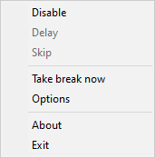

Enso Retreat Help
The Context Menu

- Disable - temporarily disable Enso Retreat for the time specified in settings.
- Delay - delay a break for the specified time.
- Skip - skip a break (available once per day).
- Take Break Now - lock the system immediately.
- Settings - show the options dialog.
- About - show copyright and versioning information.
- Exit - close Enso Retreat.
The settings window has four pages, listed on its left side. Most changes are previewed right away; press Apply or OK to save them.
Periodic Breaks
A periodic break takes the last minutes of every cycle. For example, with a 60-minute cycle and a 10-minute break you work for 50 minutes, then rest for 10. The bar at the top of the page shows one cycle: the work time, the warning before the break, and the break itself. If postponing is allowed, a second row shows how a postponed break moves into the next cycle (cycles keep their schedule, so the postponed time is taken from the next one).
- Enabled - uncheck to turn periodic breaks off.
- Cycle length - the length of one cycle in minutes, including the break. The buttons next to it are common presets.
- Break for - the break duration in minutes, taken from the end of each cycle.
- Warn me before - show a warning the specified number of minutes before a break. This also applies to scheduled breaks.
- Postpone up to N times, by M min each - how many times, and for how long, a break may be postponed from the warning. This also applies to scheduled breaks.
- Align cycles to the clock - if checked, cycles start at the beginning of an hour. Otherwise, cycles are measured from the program start time.
- Chime when a break ends - play a system or custom sound after the break ends (see Break Screen).
- Pause Retreat lasts - the time used by Disable in the context menu.
Scheduled Breaks
Scheduled breaks happen at fixed times, in addition to the regular cycle. The week view at the top shows every scheduled break; click one to select it. Press Add break to create a new break and edit it below the list:
- Enabled - uncheck to turn all scheduled breaks off without deleting them.
- Repeat - the days of the week, or the Every day and Weekdays shortcuts.
- At - the start time (hours and minutes).
- For - the break duration in minutes.
- Message - an optional message shown over the break screen during the break.
Breaks are stored as crontab records, shown in the last column. Records that use more than days of the week and a time (for example,
*/30 9-17 * * *or a day of the month), written in the settings file by hand, are shown as Custom: they are kept as is, and only their duration and message can be changed here.
Break Screen
The preview at the top shows how the break will look with the current settings. Press Try it for 10 s to see the real break screen for ten seconds without locking anything; press Esc or click to close it earlier.
- Cover - Whole screen covers all monitors; A window shows the image in a window that matches its size. Without an image, the break always covers the whole screen with stars.
- Opacity - how opaque the break screen is. It can also be adjusted with the +/- numpad keys during a break.
- Show countdown - show the remaining break time in the selected color.
- Position - put the countdown in one of the four corners or in the center of the screen. You can also click the place in the preview.
- Size - the countdown size: S, M (the default), L or XL. In a window it is drawn a bit smaller.
- Picture - Random stars draws a new star pattern every break; Images from a folder shows a random image from the selected folder (JPEG, PNG, GIF and BMP are supported). To always show the same image, keep a single image in the folder.
- Fit - Fill screen stretches images to the screen keeping their proportions; Original size only shrinks images that are too large.
- Fill around image - the color of the screen areas not covered by the image.
- Allow transparent regions - the color of the image's upper-left pixel becomes fully transparent, showing the desktop.
- Sound - a folder with sounds to play at the end of a break (WAV, MP3, WMA and FLAC). If empty, the standard system sound is played. Play plays a sample.
Quotes
When enabled, every break shows a picture with a quote below it, on a dark card in the middle of the screen. The preview shows the first quote of the list; Try it for 10 s shows the real break screen.
- Picture - The Thinker (a drawing of Rodin's sculpture), your own image chosen with Image... (click it again to choose another one), or None for the quote alone.
- Show over - Break picture keeps the stars or the images from the Break Screen section around the card; Plain dark replaces them with a dark backdrop, dimmed according to the break screen opacity.
- Font, Italic, Color and Size - the look of the quote. Any installed TrueType font can be used.
- Quotes - one quote per line, with the author after a dash surrounded by spaces, for example Rest is not idleness. - John Lubbock. Empty lines are ignored; without quotes only the picture is shown.
- Random or In order - how the next quote is chosen. In random order the same quote is not shown twice in a row.
A scheduled break's message is shown below the card.
Exceptions
Enso Retreat can skip breaks automatically. Both conditions can be turned on separately.
- Skip the break if there was no keyboard or mouse input for a while - if you were away for the selected time right before the warning, you have already had your break, so Retreat skips it.
- Don't lock the screen while any of these programs is running - add programs with Pick from running programs or Browse for .exe. The list shows which of them are running now.